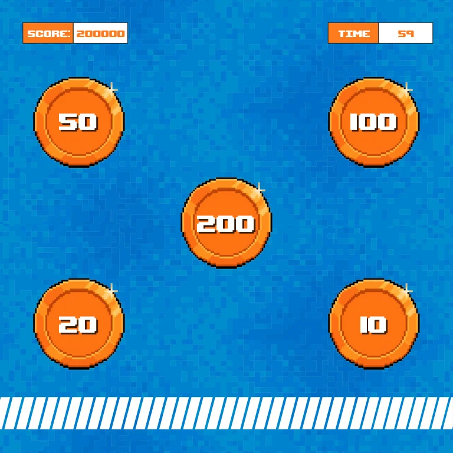

Five-stage interface sequence
The visible scores and names are design examples and are not treated as real player results or event metrics.
One action becomes a complete screen sequence.
Explore the story
Connect a physical kick prompt with entry, timed play and a final result.
Five artboards move through invitation, name entry, scoring, results and leaderboard. Point values mark the target area while separate timer and score readouts keep the round legible.
The visible scores and names are design examples and are not treated as real player results or event metrics.
The developer interface begins with a prompt to kick the ball at the screen, then moves through name entry, timed scoring, a result and a leaderboard.
The gameplay artwork distributes point values around the target area and gives score and time distinct readouts.
Explore the complete compositions and interface states. Select any image for a closer look.
Structure, interaction and visual decisions that give the work its character.
RoleConfirm UI hierarchy, scoring-state artwork, motion timing and developer handoff.
AssetsCredit supplied campaign identity, game imagery, sensor system and implementation separately. Example rankings are not performance evidence.
StatusPrivate design-source study; final approval, production and delivery remain unverified.